This is an R Markdown document detailing an in depth analysis on the employee data set. The employee dataset was explored in order to provide the requested key insights on attrition and job role trends. Additionally, I provide some interesting trends I found along the way. Lastly models were generated in order to predict salary as well as likelihood of attrition.
df_raw %>% ggplot(aes(y = Attrition, x = Age, fill = Attrition)) + geom_boxplot() +
ggtitle("Attrition v Age Boxplots")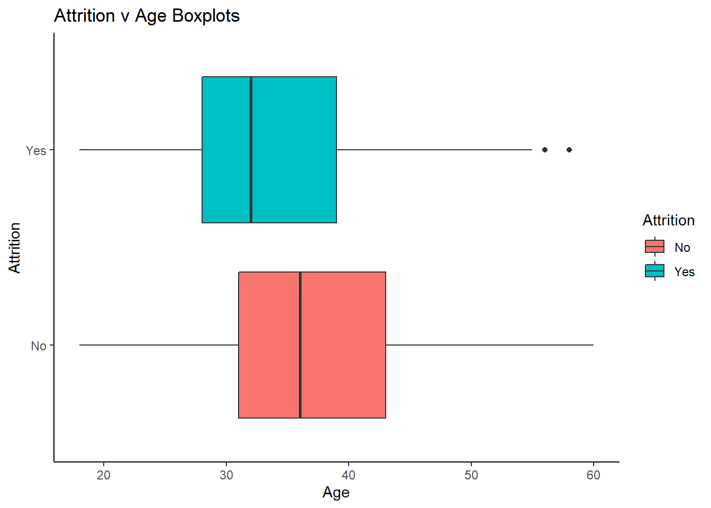
df_raw %>% ggplot(aes(x = Age, fill = Attrition)) + geom_density(alpha=0.5) +
ggtitle("Attrition v Age Density Plots")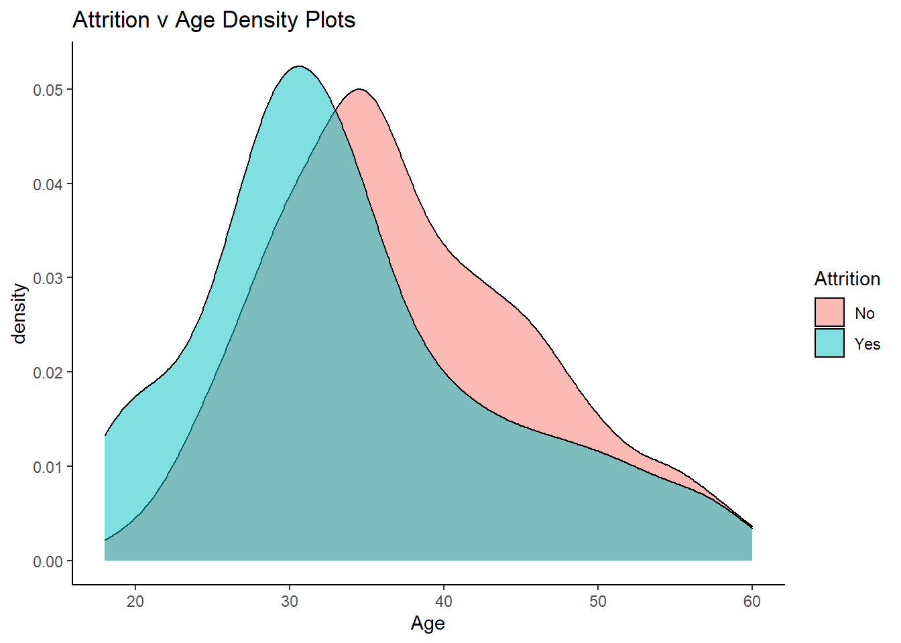
This data provides overwhelming evidence that the mean age of those who leave the company versus those who stay are different.(P = 5.05E-05) We are 95% confident that those who stay are between 1.9 to 5.35 years older than those who leave.
df_raw %>% ggplot(aes(y = Attrition, x = MonthlyIncome, fill=Attrition)) + geom_boxplot() +
ggtitle("Attrition v MonthlyIncome Boxplots")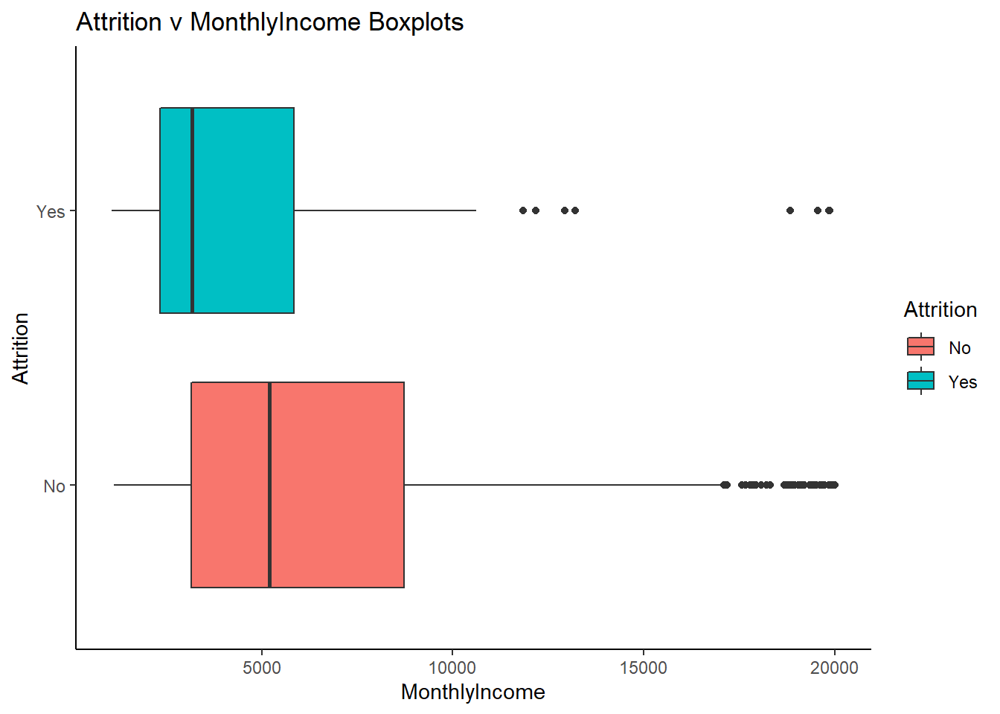
df_raw %>% ggplot(aes(x = MonthlyIncome, fill = Attrition)) + geom_density(alpha=0.5) +
ggtitle("Attrition v MonthlyIncome Density Plots")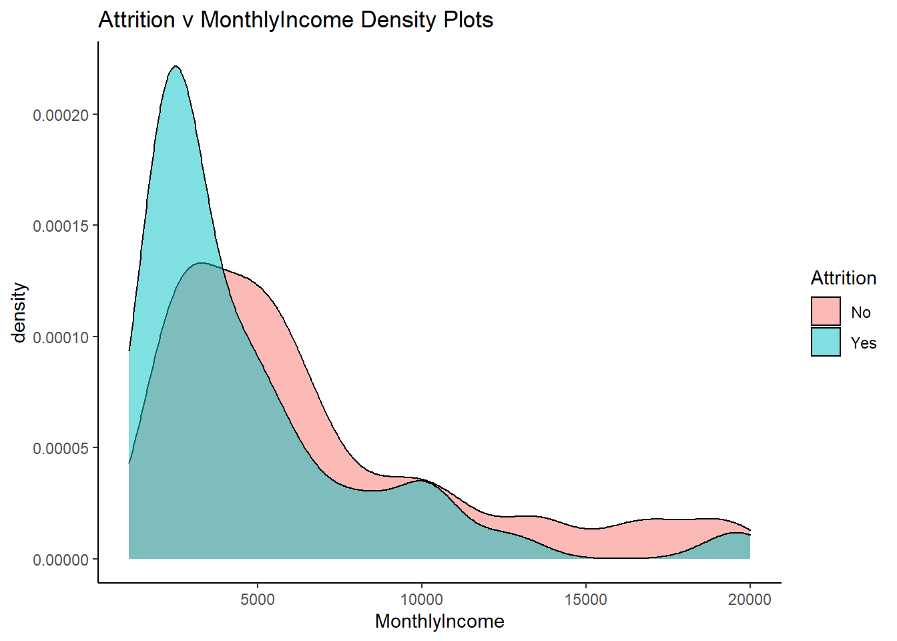
This data provides overwhelming evidence that the mean monthly income of those who leave the company versus those who stay are different. (P = 2.412E-07) We are 95% confident that those who stay have a monthly income that is 1220USD to 2654USD larger than those who leave.
df_raw %>% ggplot(aes(x = Attrition, fill = OverTime)) + geom_bar(position="fill") +
ggtitle("Attrition v OverTime Barplot")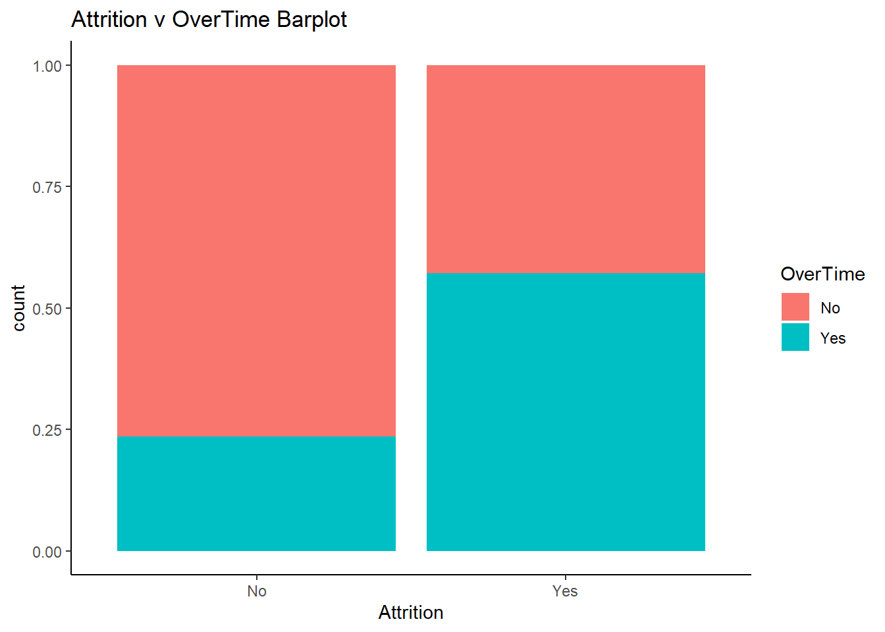
This data provides overwhelming evidence that these two variables are dependent. (P = 2.333E-15)
#JR v Age
df_raw %>% ggplot(aes(y = reorder(JobRole, Age), x = Age)) + geom_boxplot(fill = "Cornflower blue") +
ggtitle("Job Role v Age Boxplots") + ylab("Job Role")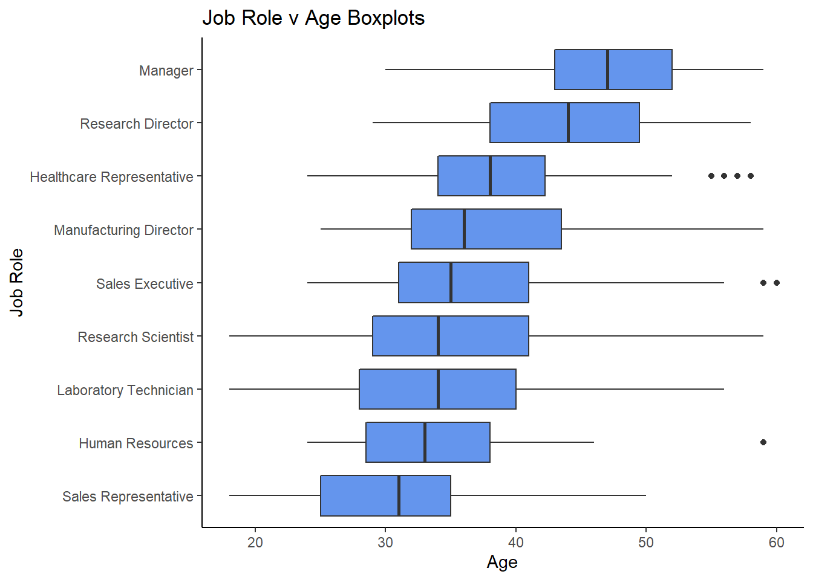
#JR v Education
df_raw %>% group_by(JobRole) %>%
summarise_at(vars(Education), list(EducationMean = mean)) %>%
ggplot(aes(y = reorder(JobRole, EducationMean), x = EducationMean)) + geom_col(fill = "Cornflower blue") +
ggtitle("Job Role v Mean Education Score Column Plot") + xlab("Education Score Mean") + ylab("Job Role")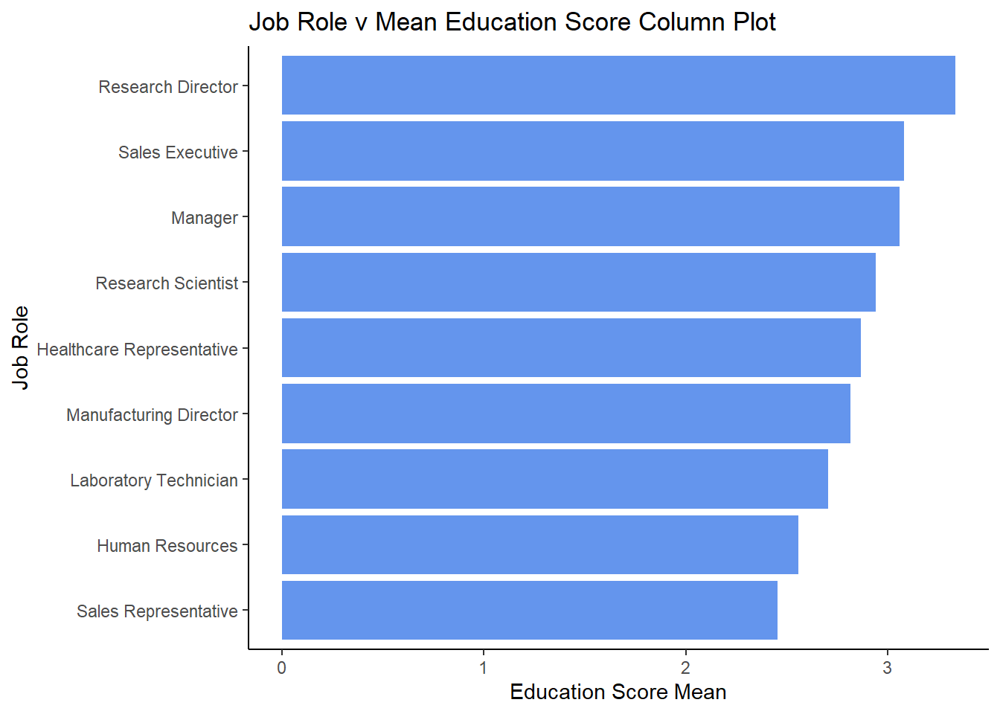
#JR v Education Field
df_raw %>% ggplot(aes(y = JobRole, fill = as.factor(EducationField))) + geom_bar(position="fill") +
ggtitle("Job Role v Education Field Barplot") + xlab("Count") + ylab("Job Role")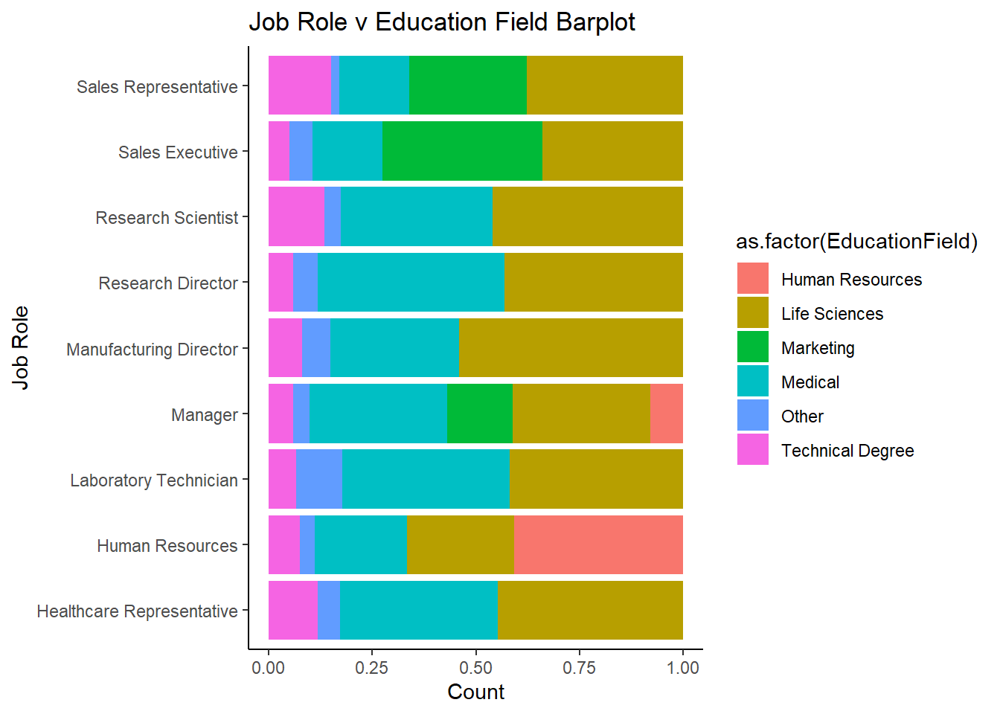
#MonthlyIncome
df_raw %>% ggplot(aes(y = reorder(JobRole, MonthlyIncome), x = MonthlyIncome)) +
geom_boxplot(fill = "Cornflower blue") + ggtitle("Job Level v Monthly Income Boxplots") +
ylab("Job Role")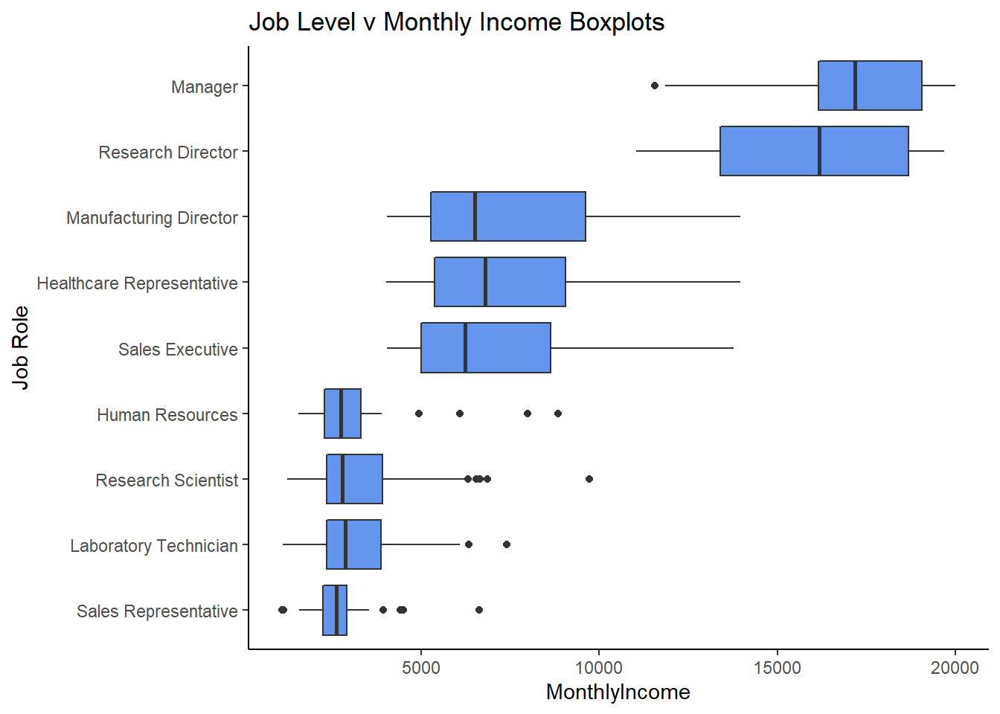
#Dep v MonthlyIncome
df_raw %>% ggplot(aes(y = Department, x = MonthlyIncome)) + geom_boxplot(fill = "Cornflower blue") +
ggtitle("Department v MonthlyIncome Boxplots")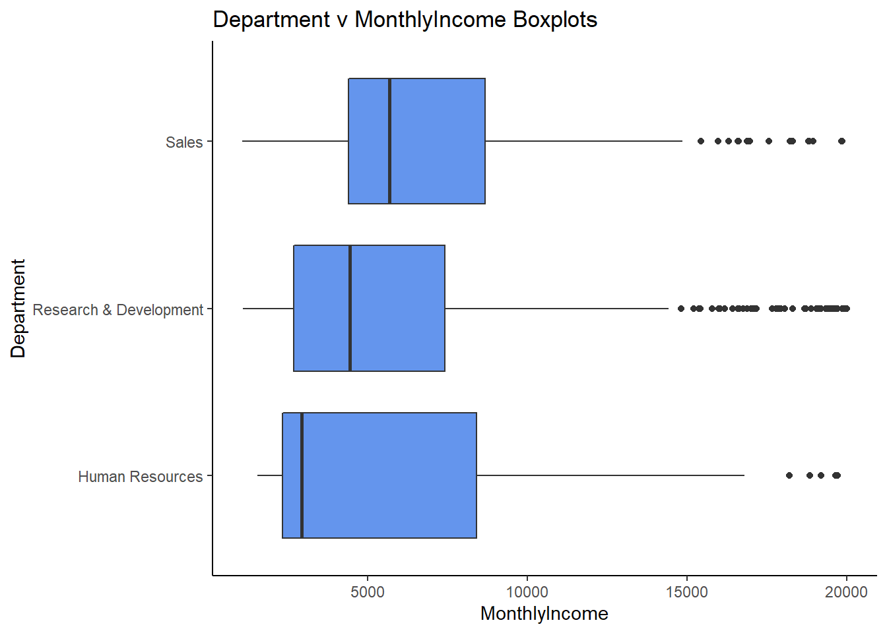
df_raw %>% ggplot(aes(x = MonthlyIncome, fill = Department)) + geom_density() +
facet_wrap(~Department) + ggtitle("Department v MonthlyIncome Density Plots")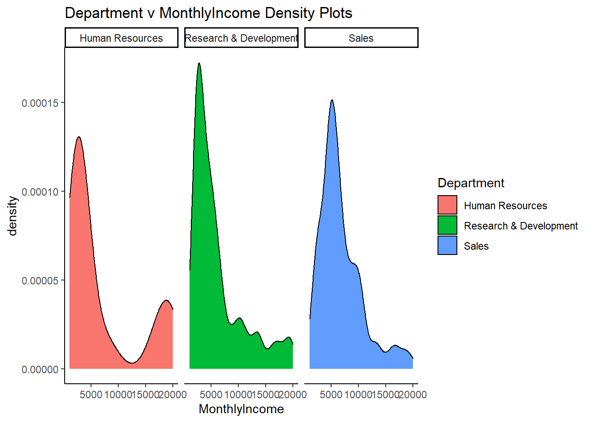
#Years at company v Income
df_raw %>% ggplot(aes(y = MonthlyIncome, x = YearsAtCompany)) + geom_point() +
geom_smooth(formula = 'y~x', method = lm) +
ggtitle("MonthlyIncome v YearsAtCompany")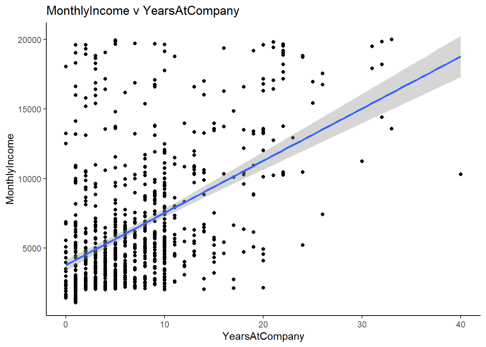
There is overwhelming evidence of a positive linear relationship between monthly income and years at the company.(P < 2E-16). We are 95% confident that for every year at the company the increase in monthly income is somewhere between 330USD to 419USD.
Take note on this plot that there are people who barely began working at the company yet started at a large income.
#Total Working Years v Income
df_raw %>% ggplot(aes(y = MonthlyIncome, x = TotalWorkingYears)) + geom_point() +
geom_smooth(formula = 'y~x', method = lm) +
ggtitle("MonthlyIncome v TotalWorkingYears")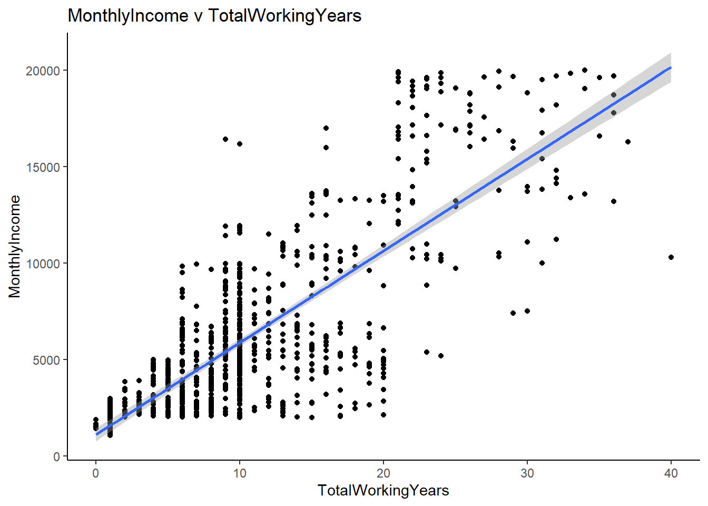
There is overwhelming evidence of a positive linear relationship between monthly income and total working years.(P < 2E-16). We are 95% confident that for every year working the increase in monthly income is somewhere between 450USD to 501USD.
Take not now on this plot how at the start of a career the Income is low for all.
Both relationships increase per year but total working is 26% more per year.
This seems to indicate that if employees want to increase their own income at a faster rate they are better off leaving the company.
df_model = df_raw %>% select("Age", "MonthlyIncome", "OverTime", "TotalWorkingYears", "JobLevel", "Attrition",
"StockOptionLevel", "DistanceFromHome", "EnvironmentSatisfaction", "MaritalStatus")
#Adjust OverTime such that its a dummy
df_model$OverTime_Yes = ifelse(df_model$OverTime == "Yes", 1, 0)
df_model$OverTime_No = ifelse(df_model$OverTime == "No", 1, 0)
#Adjust MaritalStatus
df_model$MS_Single = ifelse(df_model$MaritalStatus == "Single", 1, 0)
df_model$MS_Divorced = ifelse(df_model$MaritalStatus == "Divorced", 1, 0)
df_model$MS_Married = ifelse(df_model$MaritalStatus == "Married", 1, 0)
#Normalize the other variables
df_model$Age_Norm = (df_model$Age - mean(df_model$Age))/sd(df_model$Age)
df_model$MonthlyIncome_Norm = (df_model$MonthlyIncome - mean(df_model$MonthlyIncome))/sd(df_model$MonthlyIncome)
df_model$TotalWorkingYears_Norm = (df_model$TotalWorkingYears - mean(df_model$TotalWorkingYears))/sd(df_model$TotalWorkingYears)
df_model$JobLevel_Norm = (df_model$JobLevel - mean(df_model$JobLevel))/sd(df_model$JobLevel)
df_model$StockOptionLevel_Norm = (df_model$StockOptionLevel - mean(df_model$StockOptionLevel))/sd(df_model$StockOptionLevel)
df_model$DistanceFromHome_Norm = (df_model$DistanceFromHome - mean(df_model$DistanceFromHome))/sd(df_model$DistanceFromHome)
df_model$EnvironmentSatisfaction_Norm = (df_model$EnvironmentSatisfaction - mean(df_model$EnvironmentSatisfaction))/sd(df_model$EnvironmentSatisfaction)
#Setup Final Data State
df_model_final = df_model %>% select("Age_Norm", "MonthlyIncome_Norm", "TotalWorkingYears_Norm",
"JobLevel_Norm", "OverTime_Yes", "OverTime_No",
"StockOptionLevel_Norm", "DistanceFromHome_Norm", "EnvironmentSatisfaction_Norm",
"MS_Single", "MS_Divorced", "MS_Married", "Attrition")
df_model_final %>% ggplot(aes(x=Attrition)) + geom_bar(fill = "Cornflower blue") + ggtitle("Attrition Bar Plot")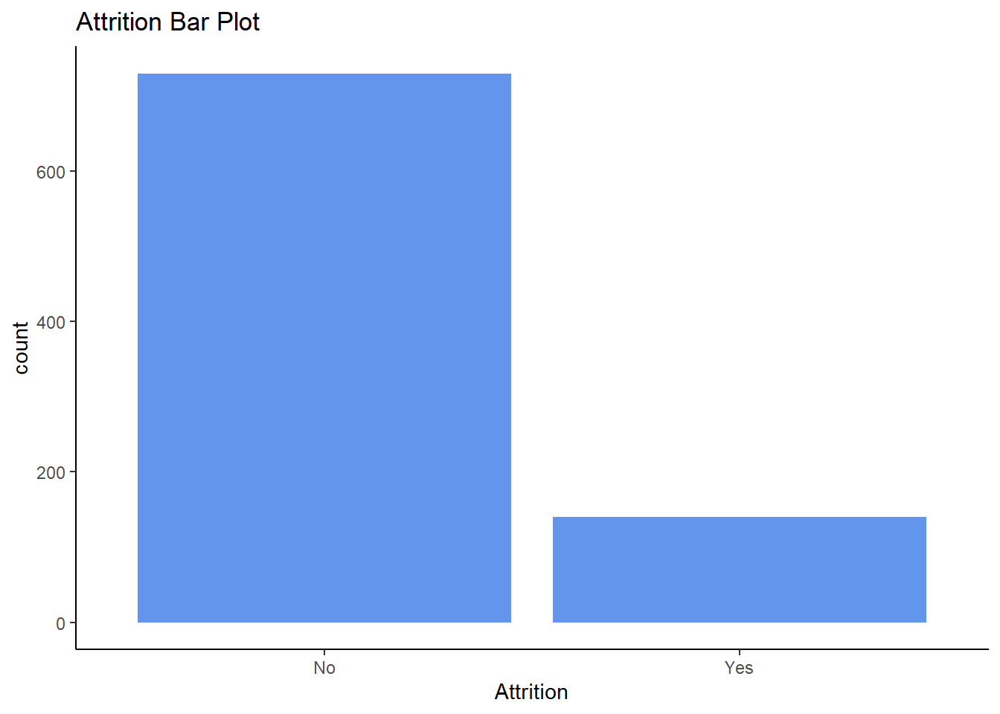
#Split into Train/Validation set and test set 60 20 20 split
tt_l = train_test_split(df_model_final, splitPerc = 0.9)
train_data = tt_l[[1]]
test_data = tt_l[[2]]
#Specify Features and Target
fea = c("Age_Norm", "MonthlyIncome_Norm", "TotalWorkingYears_Norm",
"JobLevel_Norm", "OverTime_Yes", "OverTime_No",
"StockOptionLevel_Norm", "DistanceFromHome_Norm", "EnvironmentSatisfaction_Norm",
"MS_Single")
tar = c("Attrition")
#Set Hyperparameter
perc_downsample = 0.8
rep_upsample = 4
optimal_k = 34
#UpSampling and DownSampling
minority_target = train_data %>% filter(Attrition == "Yes")
majority_target = train_data %>% filter(Attrition == "No")
trainIndices = sample(1:dim(majority_target)[1], round(perc_downsample * dim(majority_target)[1]))
train_data2 = majority_target[trainIndices,]
for(l in 1:rep_upsample){
train_data2 = rbind(train_data2, minority_target)
}
#Setup train and test data
train_fea = train_data2 %>% select(contains(fea))
train_tar = train_data2 %>% select(contains(tar))
test_fea = test_data %>% select(contains(fea))
test_tar = test_data %>% select(contains(tar))
#Evaluate KNN Model
clsf_rep = knn(train_fea[,], test_fea[,], train_tar[,], k=optimal_k, prob = T)
CM_rep = confusionMatrix(table(clsf_rep, test_tar[,]))
CM_rep## Confusion Matrix and Statistics
##
##
## clsf_rep No Yes
## No 69 3
## Yes 11 4
##
## Accuracy : 0.8391
## 95% CI : (0.7448, 0.9091)
## No Information Rate : 0.9195
## P-Value [Acc > NIR] : 0.99613
##
## Kappa : 0.2852
##
## Mcnemar's Test P-Value : 0.06137
##
## Sensitivity : 0.8625
## Specificity : 0.5714
## Pos Pred Value : 0.9583
## Neg Pred Value : 0.2667
## Prevalence : 0.9195
## Detection Rate : 0.7931
## Detection Prevalence : 0.8276
## Balanced Accuracy : 0.7170
##
## 'Positive' Class : No
## #Split into Train/Validation set and test set 60 20 20 split
tt_l = train_test_split(df_model_final, splitPerc = 0.9)
train_data = tt_l[[1]]
test_data = tt_l[[2]]
#Specify Features and Target
fea = c("Age_Norm", "MonthlyIncome_Norm", "TotalWorkingYears_Norm",
"JobLevel_Norm", "OverTime_Yes", "OverTime_No",
"StockOptionLevel_Norm", "DistanceFromHome_Norm", "EnvironmentSatisfaction_Norm",
"MS_Single")
tar = c("Attrition")
#Set Hyperparameters
perc_downsample = 0.7
rep_upsample = 4
optimal_d = 9
#UpSampling and DownSampling
minority_target = train_data %>% filter(Attrition == "Yes")
majority_target = train_data %>% filter(Attrition == "No")
trainIndices = sample(1:dim(majority_target)[1], round(perc_downsample * dim(majority_target)[1]))
train_data3 = majority_target[trainIndices,]
for(l in 1:rep_upsample){
train_data3 = rbind(train_data3, minority_target)
}
#Setup train and test data
train_fea = train_data3 %>% select(contains(fea))
train_tar = train_data3 %>% select(contains(tar))
test_fea = test_data %>% select(contains(fea))
test_tar = test_data %>% select(contains(tar))
#Build Final Model
forest = randomForest(x=train_fea, y=as.factor(train_tar$Attrition),
ntree = 1000, maxnodes = optimal_d)
#Evaluate Final Model
pred_forest = predict(forest, test_fea)
CM_rep = confusionMatrix(table(pred_forest, test_tar[,]))
CM_rep## Confusion Matrix and Statistics
##
##
## pred_forest No Yes
## No 64 7
## Yes 10 6
##
## Accuracy : 0.8046
## 95% CI : (0.7057, 0.8819)
## No Information Rate : 0.8506
## P-Value [Acc > NIR] : 0.9083
##
## Kappa : 0.2981
##
## Mcnemar's Test P-Value : 0.6276
##
## Sensitivity : 0.8649
## Specificity : 0.4615
## Pos Pred Value : 0.9014
## Neg Pred Value : 0.3750
## Prevalence : 0.8506
## Detection Rate : 0.7356
## Detection Prevalence : 0.8161
## Balanced Accuracy : 0.6632
##
## 'Positive' Class : No
## #Setup DF
MI_model = df_raw
MI_model$JobLevelFac = as.factor(df_raw$JobLevel)
#Specify Features and Target
fea = c("TotalWorkingYears", "JobLevelFac")
tar = c("MonthlyIncome")
#Setup Data
train = MI_model %>% select(contains(fea), contains(tar))
train_fea = MI_model %>% select(contains(fea))
train_tar = MI_model %>% select(contains(tar))
#Model
fit = lm(MonthlyIncome~TotalWorkingYears+JobLevelFac, data=train)
#Equations for plot
equation1=function(x){coef(fit)[2]*x+coef(fit)[1]}
equation2=function(x){(coef(fit)[2])*x+coef(fit)[1]+coef(fit)[3]}
equation3=function(x){(coef(fit)[2])*x+coef(fit)[1]+coef(fit)[4]}
equation4=function(x){(coef(fit)[2])*x+coef(fit)[1]+coef(fit)[5]}
equation5=function(x){(coef(fit)[2])*x+coef(fit)[1]+coef(fit)[6]}
#Plot
train %>% ggplot(aes(y=MonthlyIncome,x=TotalWorkingYears,color=JobLevelFac))+geom_point()+
stat_function(fun=equation1,geom="line",color=scales::hue_pal()(5)[1])+
stat_function(fun=equation2,geom="line",color=scales::hue_pal()(5)[2]) +
stat_function(fun=equation3,geom="line",color=scales::hue_pal()(5)[3]) +
stat_function(fun=equation4,geom="line",color=scales::hue_pal()(5)[4]) +
stat_function(fun=equation5,geom="line",color=scales::hue_pal()(5)[5]) +
ggtitle("MonthlyIncome Model")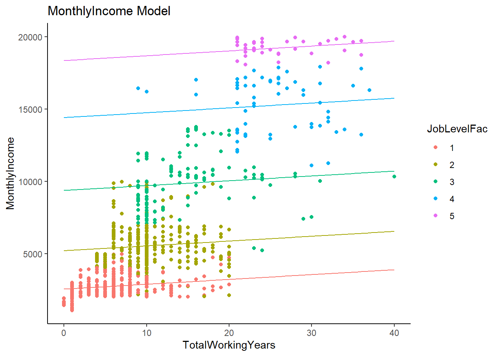
Average RMSE of this model on the test set was 1257.59.